Essentiel concours + entraînement. Appendices séro-graisseux barrés exclus.
P1
P2
P3
⭐ fréquence concours
1–2. Tube digestif & glandes annexes P3
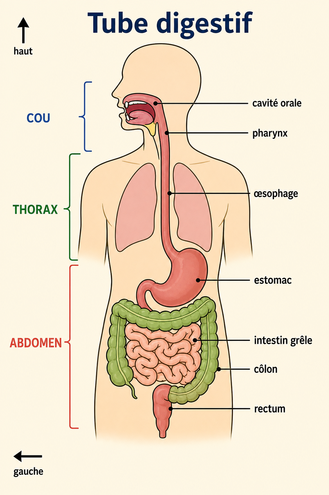
Tube = bouche → anus · Glandes annexes = salivaires, foie, pancréas.
3–4. Cavité orale & isthme du gosier P1
Souvent tombé Limites de la bouche · arcs / piliers · fosses tonsillaires.
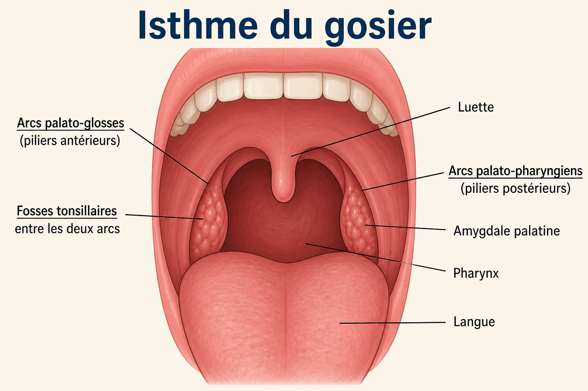
- Cavité orale = ⭐ (joues, lèvres, dents, pharynx, palais dur/mou ⭐).
- Isthme : arcs ⭐ (piliers ant.) · arcs ⭐ (piliers post.) · entre les 2 ⭐.
- 🆕 = relief de la sublinguale.
fosses tonsillaires
palato-glosses
pli sublingual
carrefour aéro-digestif
palato-pharyngiens
5–7. Pharynx & œsophage P2
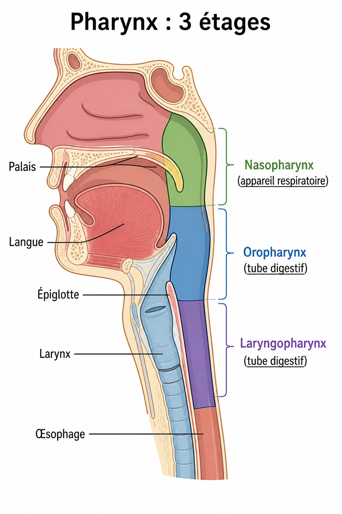
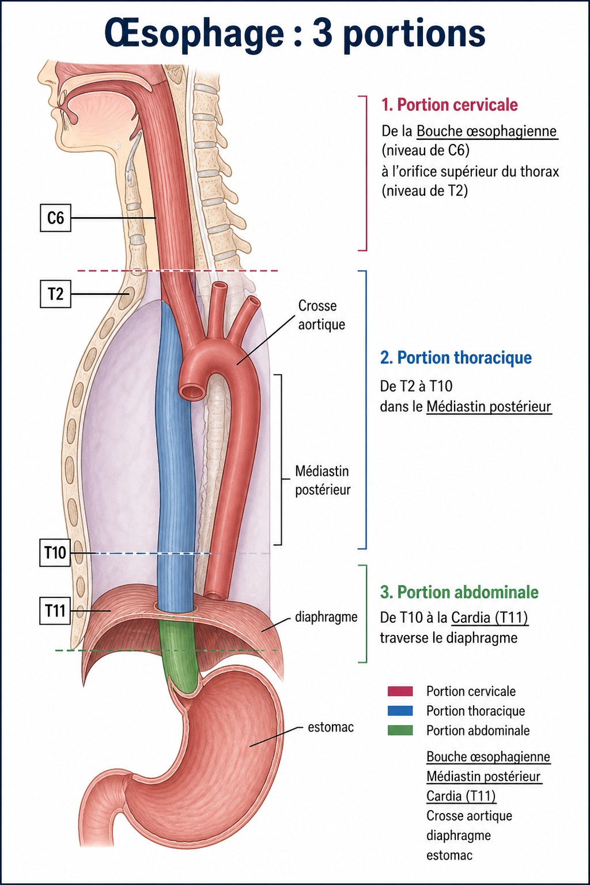
- Naso = ⭐ · oro + laryngo = ⭐.
- Œsophage : bouche œsophagienne ⭐ · ⭐⭐ · abouchement = ⭐⭐ (~) · 🆕 sphincter œsophagien supérieur.
- Épiglotte (laryngo-pharynx) : aliments → œsophage · air → ⭐.
T11
digestif
médiastin postérieur
respiratoire
cardia
larynx
8–10. Topographie & méso P2
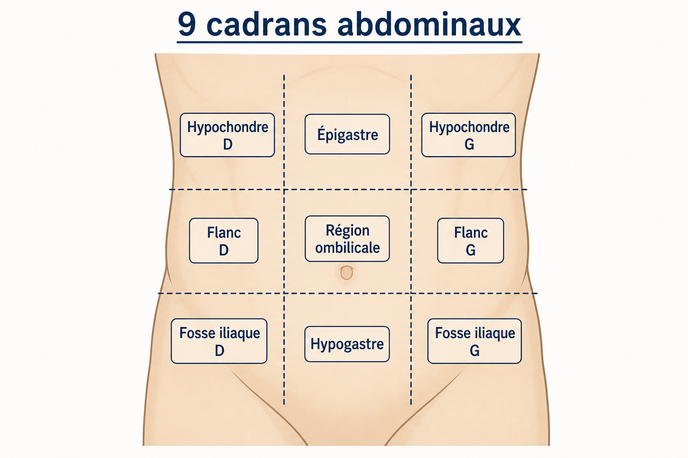
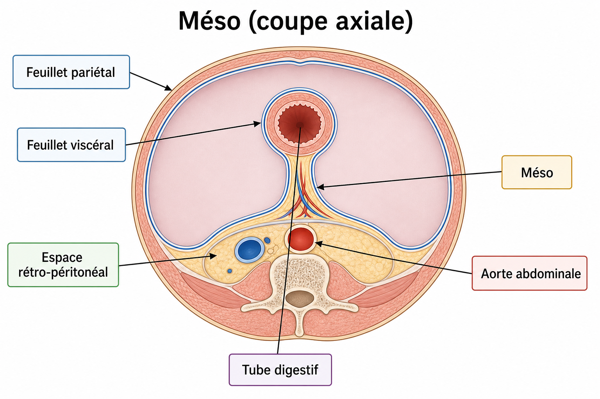
- 9 cadrans : centre = épigastre / ombilical / hypogastre · lat. = ⭐ + flancs + ⭐.
- = double feuillet péritonéal reliant organe à la paroi (mobilité / vaisseaux).
méso
fosses iliaques
hypochondres
11–12. Estomac P1
Souvent tombé Section la plus dense : cardia / fundus / corps / pylore.
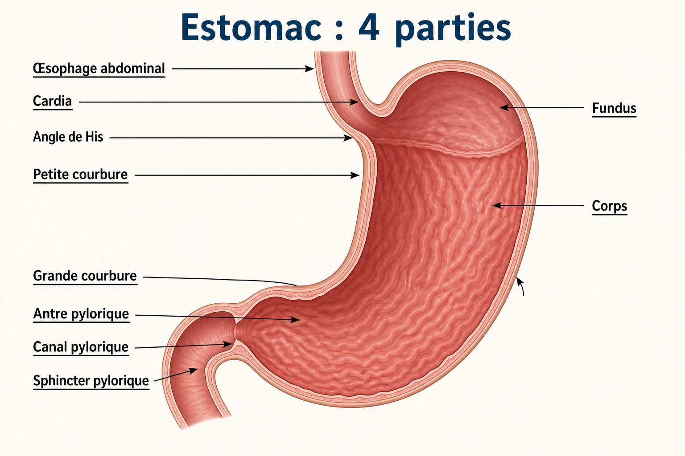
- Digestion mécanique + chimique · petite / grande courbures ⭐⭐.
- 4 parties : ⭐⭐⭐ · ⭐⭐⭐ · ⭐⭐⭐ · ⭐ (vidange ⭐⭐).
- Schéma : ⭐ · ⭐⭐.
- Courbures : petite = ⭐⭐ · grande = ⭐⭐.
- Cardia : orifice ⭐ (T11) · valvule ⭐ (anti-reflux).
- Fundus = partie ⭐ · Corps = partie ⭐, ⭐.
- Pylore : sphincter ⭐ → duodénum ⭐⭐.
pylore
œsophage abdominal
fundus
petite courbure
cardia
corps
interne
latérale
supérieur
cardio-œsophagienne
supérieure
moyenne la plus volumineuse
vertical
pylorique lisse
13–15. Intestin grêle & duodénum P1
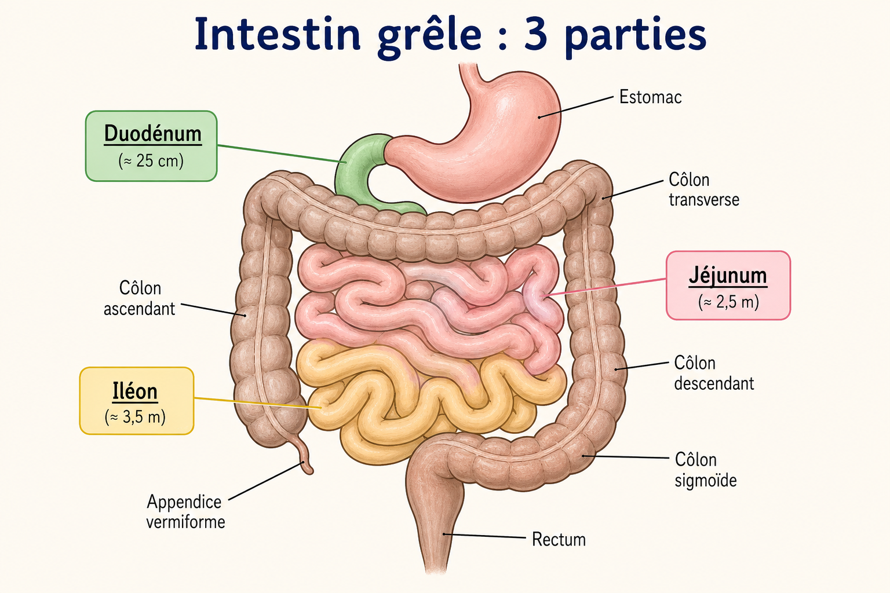
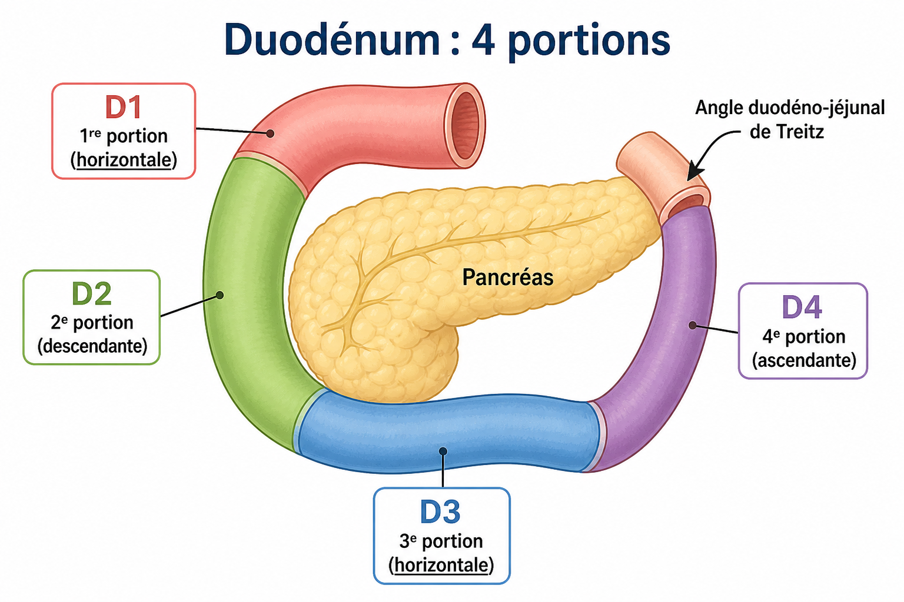
- Duodénum ~ ⭐, ⭐, en ⭐ · jéjunum/iléon ⭐ (anses + mésentère).
- 4 portions : et = horizontales.
D3
fixe
mobiles
25 cm
D1
C
16–21. Gros intestin, rectum, mobilité P1
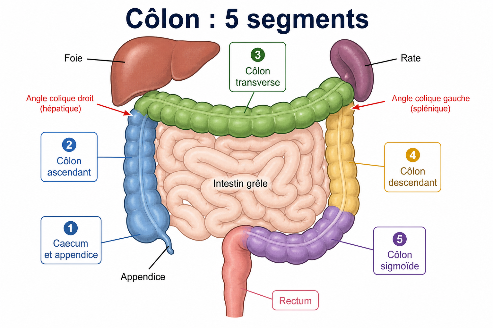
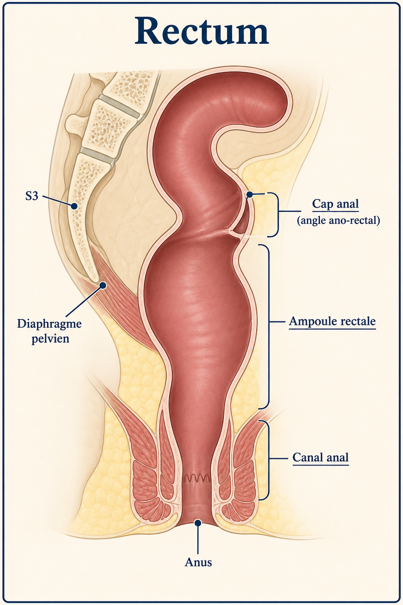
- Mobiles ⭐ : · · · fixes ⭐ : · .
- Rectum : cap anal ⭐⭐ · ⭐⭐ (stockage) · ⭐⭐ (continence).
- Appendice : s'ouvre dans le caecum via l' ⭐, muni de la ⭐ · gros intestin étendu de l'angle ⭐ à l'anus.
🆕 Volvulus du sigmoïde possible.
canal anal
ascendant
sigmoïde
ampoule
caecum
descendant
transverse
orifice caeco-appendiculaire
valvule appendiculaire
iléo-caecal
22–25. Glandes salivaires P2
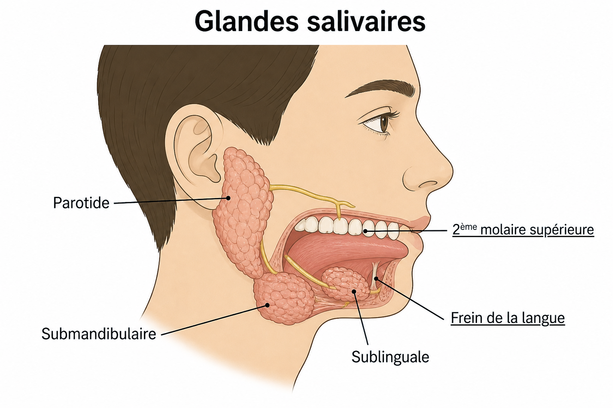
- Parotide → vestibule face à la ⭐ / ⭐.
- Submandibulaire → ⭐⭐ · sublinguale → pli sublingual ⭐ · les deux près du .
2ème molaire
papille parotidienne
caroncule sublinguale
frein de la langue
26–28. Foie P1
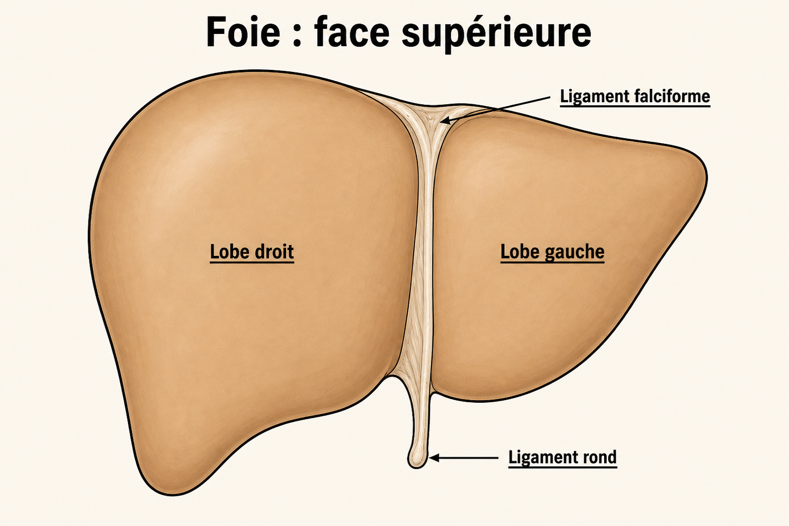
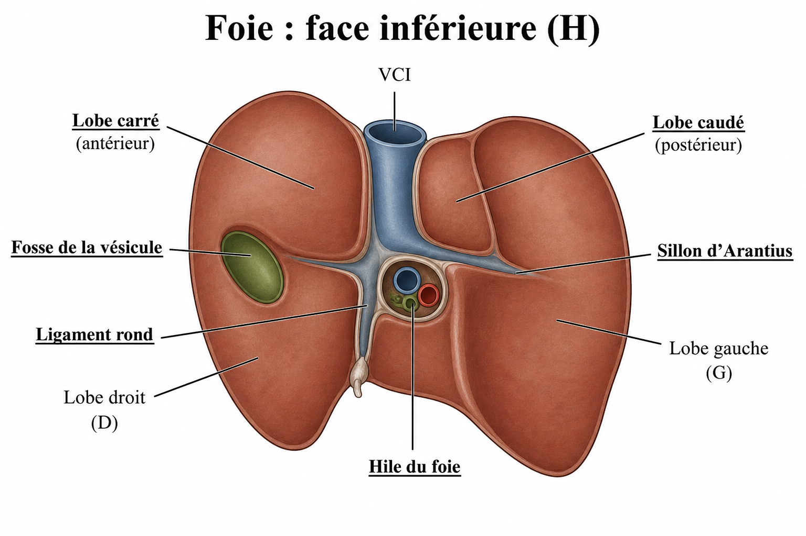
- Surtout dans l' ⭐ · face sup. : lobes D/G séparés par ⭐.
- Face inf. (H) : lobes ⭐ + ⭐ · fosse VB · ⭐ · ⭐⭐.
hile
ligament falciforme
carré
ligament rond
hypochondre droit
caudé
29–31. Bile, voies biliaires, pancréas P1
Souvent tombé Lobules hépatiques ⭐ · cystique ⭐⭐ · cholédoque ⭐⭐⭐ · ampoule · D2 / papille majeure · hypochondre gauche ⭐.
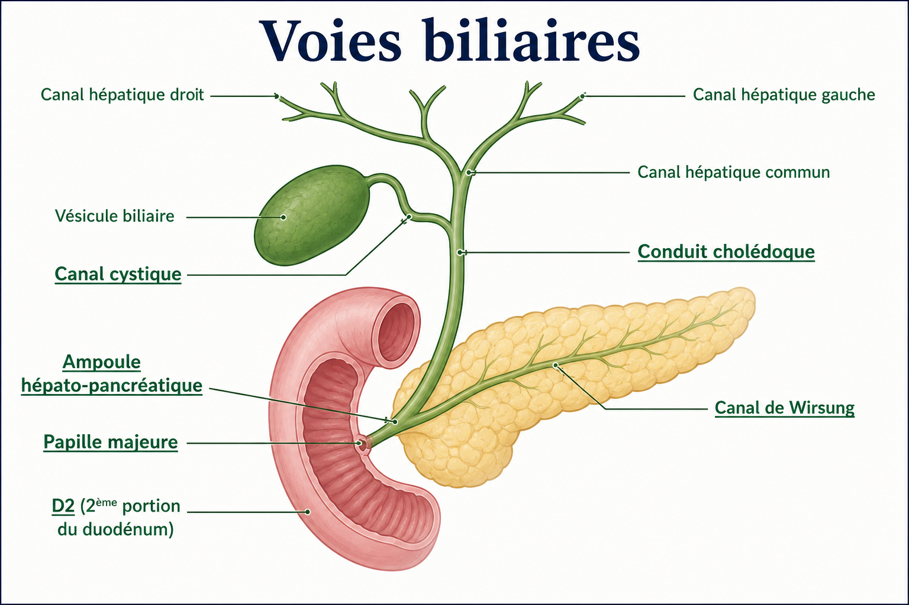
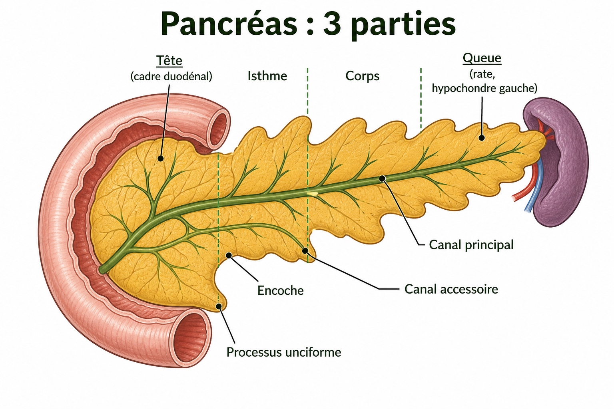
- Bile sécrétée par les ⭐.
- Hépatiques D/G → hépatique commun + ⭐⭐ → ⭐⭐⭐ · fusion avec ⭐⭐ au niveau de l' ⭐⭐ → ⭐⭐ / ⭐⭐.
- Pancréas : tête dans le ⭐⭐ · queue ↔ ⭐ / ⭐.
lobules hépatiques
cystique
cholédoque
Wirsung
ampoule
D2
papille majeure
cadre duodénal
rate
hypochondre gauche
32–33. Vascularisation P2
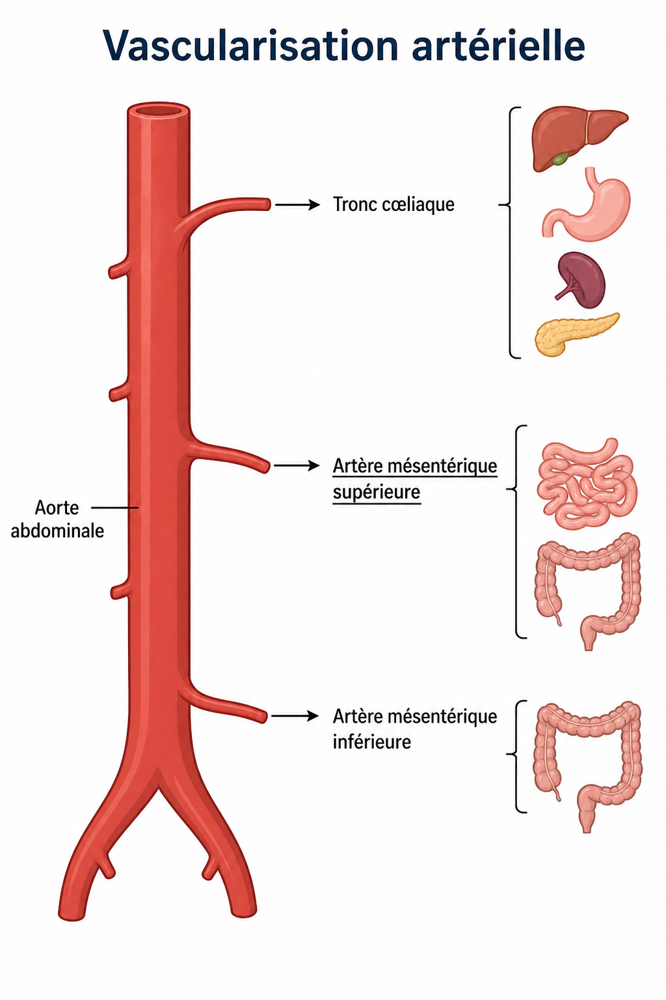
- 🆕 Tronc cœliaque naît en (gastrique G + splénique + hépatique commune) · ⭐ (ex. côlon ascendant).
- Porte : ⭐⭐ + ⭐⭐ + ⭐⭐ → hile (entre 2 réseaux capillaires).
splénique
AMS
VMS
T12
VMI
Flashcards — fin de fiche
P1 — à maîtriser en priorité
4 parties de l'estomac (schéma) ?
Cardia · fundus · corps · pylore (+ petite courbure, œsophage abdominal).
Cardia : orifice + valvule ?
Orifice supérieur ⭐ (T11) + valvule cardio-œsophagienne ⭐ → évite le reflux gastro-œsophagien.
Fundus vs Corps de l'estomac ?
Fundus = partie supérieure ⭐ · Corps = partie moyenne la plus volumineuse ⭐, vertical ⭐.
Sphincter pylorique ?
Lisse ⭐ — régule la vidange gastrique vers le duodénum ⭐⭐.
Voies biliaires clés ?
Hépatiques D/G → hépatique commun + cystique ⭐⭐ → cholédoque ⭐⭐⭐ + Wirsung → ampoule → D2 / papille majeure ⭐⭐.
Cystique → quoi ?
Conduit cystique relie la vésicule biliaire à la voie biliaire principale (cholédoque) ⭐⭐.
Isthme du gosier ?
Palato-glosses (ant.) · palato-pharyngiens (post.) · fosses tonsillaires entre les 2.
Duodénum vs jéjunum/iléon ?
~25 cm, fixe, en C · jéjunum/iléon mobiles avec anses.
Foie face inférieure ?
Lobes carré + caudé · fosse VB · hile · ligament rond.
Côlon mobile vs fixe ?
Mobiles : caecum, transverse, sigmoïde · fixes : ascendant, descendant.
P2 — à bien connaître
Épiglotte : rôle ?
Clapet du laryngo-pharynx → aliments vers l'œsophage · air vers le larynx ⭐.
Pharynx : 3 étages ?
Naso = respiratoire · oro + laryngo = digestif.
Œsophage → estomac ?
Médiastin postérieur · cardia (~T11).
Appendice vermiforme : orifice + valvule ?
Orifice caeco-appendiculaire ⭐ + valvule appendiculaire ⭐ · angle iléo-caecal ⭐.
Papille parotidienne ?
Abouchement du conduit parotidien dans le vestibule, face à la 2ème molaire sup. ⭐.
Lobules hépatiques ?
Unités fonctionnelles du foie — sécrètent la bile ⭐.
Queue du pancréas : topographie ?
Hypochondre gauche ⭐, en rapport avec la rate ⭐.
Rectum : 3 repères ?
Cap anal · ampoule · canal anal.
Système porte ?
VMS + VMI + splénique → hile.
Tronc cœliaque 🆕 ?
Naît en T12 · gastrique G + splénique + hépatique commune.
Parotide : abouchement ?
Face à la 2ème molaire sup. / papille parotidienne ⭐.
P3 — lecture attentive
Pli sublingual 🆕 ?
Relief de la glande sublinguale.
Méso = ?
Double feuillet péritonéal (mobilité + vaisseaux).
Prête en local — publication groupée plus tard.